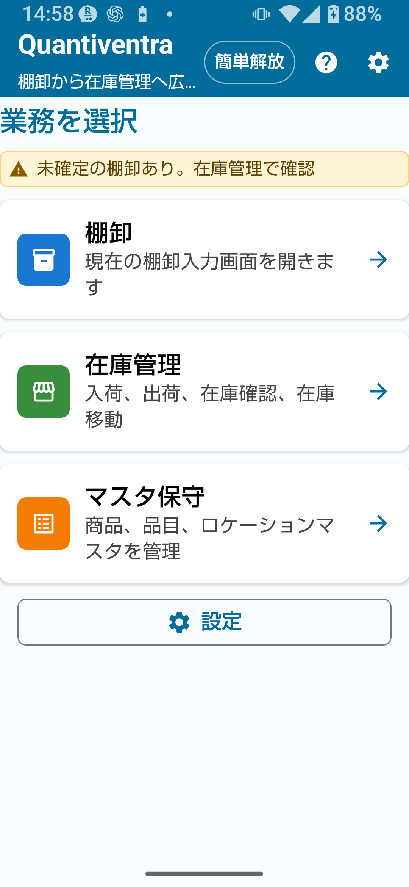
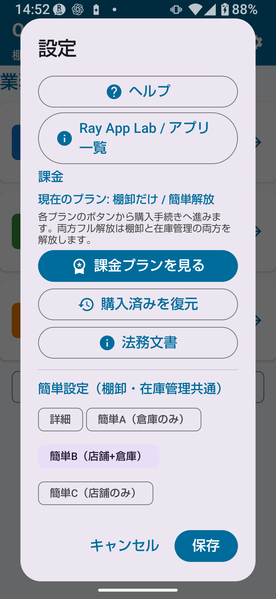
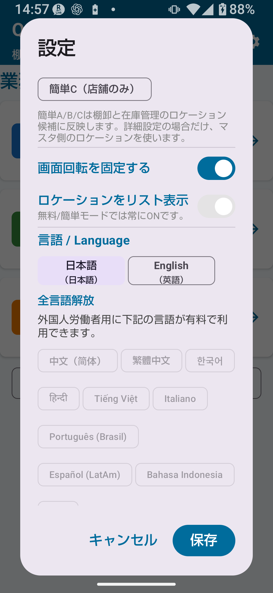
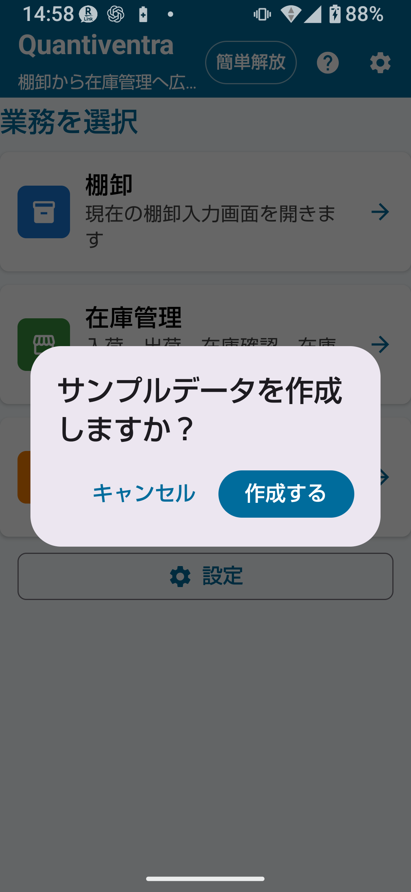

1-1. アプリについて
Quantiventra（クアンティベントラ）は、「Quantity（数量）」と「Inventory（在庫・棚卸）」を組み合わせた造語です。
スマートフォンのカメラを使ったバーコードスキャンで、棚卸・在庫管理作業を効率化するAndroidアプリです。
カメラをコードに向けるだけで商品を自動認識し、数量を入力・保存するという直感的な操作で、紙の棚卸作業をデジタル化できます。
スキャン結果はCSVファイルとして保存されるため、ExcelやGoogleスプレッドシートとの連携も容易です。
棚卸・在庫管理・マスタ管理・CSV取込/出力などの通常業務は、基本的に端末内で行えます。通信が不安定な倉庫、店舗、バックヤード、現場でも記録や確認を進めやすく、入力した業務データも基本的に端末内で扱われます。購入状態の確認、購入済み復元、ストア遷移、外部リンク表示など、一部機能では通信が必要になる場合があります。

図1-1 Quantiventra トップ画面
1-2. 主な特徴
📦 在庫カウント
バーコードスキャンで商品を素早く特定し、数量を即時記録。計算機能内蔵で複数箇所の合算も簡単。
🗂️ マスタ管理
商品・品目・ロケーションをマスタ登録。CSVで一括取込も可能。
📍 ロケーション管理
倉庫・店舗・棚など複数の場所を登録し、場所別に在庫を管理できます。ロケーションごとに、補充判定へ含めるかどうかも設定できます。
📊 CSV入出力
在庫表・バックアップ・履歴をCSVで出力。ExcelやGoogleスプレッドシートで集計可能。
🌐 多言語対応
日本語・英語・中国語・韓国語など12言語に対応。端末言語に自動対応します。
⭐ フル解放機能
件数上限解除・詳細ルール・CSV拡張設定・ロケーションマスタ管理など、より細かい運用設定が使えます。
1-3. カメラスキャンの仕組み
画面中央に表示されるガイド枠（青または黄色の枠）の範囲内にコードが入ると、
同じコードを3フレーム連続で検出した時点で自動認識されます。
3回確認することで誤読を防ぎながら確実な読み取りが可能です。
💡 コードが認識されないときは
コードはガイド枠の内側に収まっている必要があります。枠の外にあるコードは認識されません。
枠内にしっかり収まるようにカメラ位置を調整してください。
アプリは「棚卸」と「在庫管理」の2つの主機能で構成されており、マスタ管理・設定・CSV入出力が共通機能として提供されます。
2-1. 動作環境
| 項目 | 要件 |
|---|
| OS | Android 8.0（Oreo / API 26）以上 |
| カメラ | 自動フォーカス対応カメラ（必須） |
| ストレージ | 内部ストレージ 10MB以上の空き推奨 |
| 必要権限 | カメラ権限（必須） |
| インターネット | 通常の棚卸・在庫管理作業では不要。購入確認、購入済み復元、ストア遷移、外部リンク表示などでは通信が必要になる場合があります。 |
| Google Playサービス | プラン購入・復元に必要 |
✅ 通常業務はオフラインで利用可能
棚卸・在庫管理の通常作業はインターネット接続なしでも行えるため、工場・倉庫・店舗など通信が不安定な環境でも作業を進めやすい構成です。購入確認、復元、ストア遷移、外部リンク表示などでは通信が必要になる場合があります。
2-2. 必要な権限
| 権限 | 用途 | 拒否した場合 |
|---|
| カメラ | バーコード・QRコードのスキャン | カメラ機能が使用不可（手動入力のみ可） |
💡 ストレージ権限について
本アプリはAndroid標準の内部ストレージにデータを保存します。ストレージ権限は不要です。
データのやり取りはアプリ内の「インポート」「エクスポート」「共有」機能を使って行います。
3-1. インストール
Google Play ストアから「Quantiventra」を検索してインストールします。または本ページ上部のQRコードをスキャンしてストアページを直接開くことができます。
- Google Play ストアを開く。
- 「Quantiventra」で検索、またはQRコードを読み取ってストアページへ進む。
- 「インストール」をタップする。
3-2. 初回起動フロー
- アプリアイコンをタップして起動する。
- カメラ権限の許可ダイアログが表示される。「許可」をタップする。
- サンプルデータ作成の確認ダイアログが出る場合は「作成する」または「スキップ」を選ぶ。
- データ保存フォルダが内部ストレージに自動作成される。
- トップ画面が表示されれば初回設定完了。
⚠ カメラ権限を拒否した場合
カメラ権限を拒否するとバーコードスキャンが使えません。
権限を後から許可するには：端末の「設定」→「アプリ」→「Quantiventra」→「権限」→「カメラ」でONにしてください。
3-3. 機種変更後の引き継ぎ
- 旧端末で「設定 → エクスポート」または「設定 → 共有」でデータを出力・保存しておく。
- 新端末に同じGoogleアカウントでサインインする。
- Google PlayからQuantiventraをインストールする。
- 「設定 → 購入済み復元」で購入済みプランを復元する。
- バックアップしたマスタCSVを「設定 → マスタCSVを取り込む」で読み込む。
🚨 アンインストール時の注意
アプリをアンインストールすると内部ストレージのデータもすべて削除されます。
大切なデータは定期的に「エクスポート」または「共有」でバックアップしてください。
アプリのデータは端末内のアプリ専用領域に保存されます。
通常のファイルマネージャーで直接編集するものではありません。データの取り出しやバックアップには、アプリ内の共有・エクスポート機能を使用してください。
| 分類 | 内容 | 主な更新タイミング |
|---|
| マスタ情報 | 商品・品目・ロケーションなどの基本データ | 新規登録・編集・無効化などを行ったとき |
| 棚卸・在庫履歴 | 棚卸、入荷、出荷、在庫移動、CSV取込などの記録 | 保存や取込を行ったとき |
| アプリ設定 | 言語、読取、コードルール、ロケーション設定など | 設定を変更したとき |
ExcelでCSVを開く方法
CSVファイルはUTF-8形式で保存されています。Excelで開く際は以下の手順を推奨します。
- Excelを開き「データ」タブ →「テキストまたはCSVから」を選択する。
- CSVファイルを選択する。
- 文字コードで「Unicode（UTF-8）」を選択する。
- 「読み込み」をクリックする。
⚠ ファイルを直接ダブルクリックしない
CSVをダブルクリックで開くと文字化けする場合があります。必ず「データ」タブからインポートしてください。
推奨バックアップ手順
- 「設定 → エクスポート（フォルダを選択）」をタップする。
- 端末の「Documents」フォルダ内にバックアップ用フォルダを作成して選択する。例：
Quantiventra_backup_20250401
- 履歴CSVとマスタCSVが保存されたら完了。
- Google Drive・USBケーブル経由でPCにコピーするとさらに安全。
| 項目 | 棚卸 | 在庫管理 |
|---|
| 目的 | 実際の数量を数えて記録する | 入荷・出荷・移動で在庫数を管理する |
| 操作の流れ | 商品読取 → 数量入力 → 保存 → 確定 | 入荷/出荷/移動 → 保存 → 履歴確認 |
| 主な利用シーン | 月次棚卸、期末棚卸、抜き打ち確認 | 日常の入荷受入、出荷処理、移動管理 |
| 在庫への影響 | 棚卸単体では現在庫を直接変更しません。確定後、在庫管理側の確認画面から反映できる場合があります | 操作のたびに即時反映 |
| 対応画面 | 棚卸画面・棚卸履歴 | 在庫確認・入荷・出荷・移動・在庫履歴 |
⚠ 注意
棚卸と在庫管理は別機能です。棚卸で数量を入力しても、確定・反映の操作を行わない限り在庫管理の数値は変わりません。混同しないよう注意してください。
ステップ1：サンプルデータで試す
- アプリを起動し、サンプルデータ作成の確認が出たら「作成する」を選ぶ。
- トップ画面で「在庫管理」を開き、サンプル商品の在庫を確認する。
- 「棚卸」を開き、バーコード入力や数量入力を試す。
- CSV出力を試す。
- 本番運用前にサンプルデータを削除する（設定画面から）。
ステップ2：商品マスタを登録する
- トップ画面で「マスタ管理」を開く。
- 「商品マスタ」から新規登録を行い、商品コードと商品名を入力する。
- 必要に応じて品目、価格、補充目安を設定する。
- ロケーションマスタで倉庫・店舗などを登録する（在庫管理 簡単解放以上、またはフル解放時に利用）。
ステップ3：日常運用を始める
- 入荷時は「在庫管理 → 入荷」でバーコードを読み取り数量を入力する。
- 出荷時は「在庫管理 → 出荷」で同様に操作する。
- 棚卸は「棚卸」から実棚数量を記録する。
💡 ヒント
まずサンプルデータで操作を練習し、慣れてから本番データを登録することをおすすめします。
アプリ起動後のトップ画面は、主要機能への入口です。
| 入口 | 説明 |
|---|
| 棚卸 | 商品を読み取り、実棚数量を入力する棚卸作業へ進む |
| 在庫管理 | 在庫確認、入荷、出荷、在庫移動、在庫履歴へ進む |
| マスタ管理 | 商品マスタ、品目マスタ、ロケーションマスタを管理する |
| 設定 | 言語、棚卸設定、CSV、サンプルデータ、課金、法務文書などを開く |
| ヘルプ | 取扱説明書またはヘルプページへ進む |
未確定棚卸データがある場合の表示
未確定の棚卸データがある場合、トップ画面に通知が表示されます。棚卸画面で内容を確認・確定してから在庫管理へ進んでください。
⚠ 注意
未確定の棚卸データがある状態で在庫管理を操作すると、データが混在する場合があります。棚卸を確定してから在庫管理を操作することをおすすめします。
設定画面では、アプリ全体・棚卸・在庫管理・CSV・言語・課金・サンプルデータ・法務文書を管理します。

図8-1 設定画面（メイン）
データ入出力
| ボタン | 説明 | 備考 |
|---|
| マスタCSVを取り込む | 外部CSVファイルをマスタとして読み込む（上書き） | 全プラン |
| 共有（メール・LINE等） | 履歴CSVとマスタCSVを他アプリへ送信 | 全プラン |
| エクスポート（フォルダを選択） | 指定フォルダに履歴・マスタCSVを保存 | 全プラン |
| 履歴データの全消去 | スキャン履歴を削除してリセット | 全プラン（取消不可） |
| マスタの実数をリセット | 全品目の登録済累計を0にリセット | フル解放（取消不可） |
共通設定
| 設定項目 | 説明 | プラン |
|---|
| 表示言語 | アプリ表示言語の選択 | 全プラン（一部言語は要解放） |
| 画面回転固定 | 端末を傾けても画面を固定する | 対象機能の簡単解放以上 |
| サンプルデータ作成 | 練習用サンプルデータを作成する | 全プラン |
| サンプルデータ削除 | サンプルデータを一括削除する | 全プラン |
| 購入済み復元 | Google Playで購入済みのプランを復元する | 全プラン |
| 法務文書表示 | 利用規約、プライバシーポリシーなどを表示する | 全プラン |
棚卸設定
| モード | 説明 | ロケーション |
|---|
| 詳細 | 登録済みロケーションを詳しく使う | ロケーションマスタに登録したすべての場所 |
| 簡単A | 倉庫のみで棚卸を行う | 倉庫のみ |
| 簡単B | 倉庫と店舗で棚卸を行う | 倉庫・店舗 |
| 簡単C | 店舗のみで棚卸を行う | 店舗のみ |
⚠ 注意
フル解放済みでも、設定が簡単A/B/Cのままであれば簡単ロケーション表示になります。詳細ロケーションを使うには「詳細」モードに変更してください。
商品コード読み取り設定
商品コード用の読み取り形式は、設定画面の「商品コード読み取り設定」から別フォームで確認・変更します。ロケーションコード用の設定とは分けて扱います。不要な形式を外すと誤読を防ぎやすくなります。
| プラン | 商品コード読み取り形式 | 変更可否 |
|---|
| 無料版 | EAN-13 / EAN-8 / UPC-A / UPC-E / Code39 / Code128 | ON固定 |
| 簡単解放 | 標準6種類（EAN-13 / EAN-8 / UPC-A / UPC-E / Code39 / Code128）の中で選択 | 選択可能 |
| フル解放 | 標準6種類に加えてQRも選択可能 | 選択可能 |
コードルール / ロケーションルール（フル解放）
商品コードの文字種（英数字のみ・数字のみ・制限なし）、最小・最大文字数、ロケーションコードの最大文字数などを設定できます。商品コード用とロケーションコード用のルールは分けて確認してください。
購入済み復元
Google Playで購入済みのプランを復元します。購入権利は同じGoogleアカウントで確認されます。端末内データは自動移行されないため、機種変更時はCSVバックアップやエクスポートも併せて行ってください。別のGoogleアカウントへ購入権利を移行することはできません。
🚨 履歴全消去・マスタリセットは取り消し不可
「履歴データの全消去」および「マスタの実数をリセット」は一度実行すると元に戻せません。実行前に必ず「エクスポート」でバックアップしてください。
アプリ内で表示言語を選べます。設定は「設定 → 言語設定」から変更します。アプリ起動時に端末の言語設定を自動検出し、対応言語があれば自動的にその言語で起動します。

図9-1 言語設定画面
対応言語一覧（全12言語）
| 言語コード | 言語名 | 無料版 | 全言語解放 |
|---|
ja | 日本語 | ✓ | ✓ |
en | English（英語） | ✓ | ✓ |
zh | 中文（简体）/ 中国語・簡体字 | 端末主言語のみ | ✓ |
tw | 繁體中文 / 中国語・繁体字 | 端末主言語のみ | ✓ |
ko | 한국어 / 韓国語 | 端末主言語のみ | ✓ |
hi | हिन्दी / ヒンディー語 | 端末主言語のみ | ✓ |
vi | Tiếng Việt / ベトナム語 | 端末主言語のみ | ✓ |
it | Italiano / イタリア語 | 端末主言語のみ | ✓ |
pt-BR | Português (Brasil) / ブラジルポルトガル語 | 端末主言語のみ | ✓ |
es-419 | Español (LatAm) / ラテンアメリカスペイン語 | 端末主言語のみ | ✓ |
id | Bahasa Indonesia / インドネシア語 | 端末主言語のみ | ✓ |
th | ภาษาไทย / タイ語 | 端末主言語のみ | ✓ |
💡 自動言語検出について
端末言語が対応言語の場合はその言語で起動します。未対応の場合は英語へフォールバックします。
アプリ内で言語を明示的に選んだ場合、端末言語よりアプリ内設定が優先されます。
⚠ 注意
法務・課金・購入条件などの重要な内容は、アプリ内の最新表示およびGoogle Play上の表示を優先してください。
Quantiventraは無料版で基本機能を試せます。より多くの件数や機能が必要な場合は、Google Playから各プランを購入します。
🚨 重要
価格・税・購入条件・返金条件はGoogle Playの表示が最終です。本取扱説明書では断定しません。購入前にGoogle Play上の説明を必ず確認してください。
機能比較表
| 機能・制限 |
無料版 |
棚卸 簡単解放 |
棚卸 フル解放 |
在庫管理 簡単解放 |
在庫管理 フル解放 |
| 棚卸マスタ件数 | 30件まで | 300件まで | 上限解除 | 在庫管理側はアプリ内表示に従う | 在庫管理側はアプリ内表示に従う |
| 棚卸履歴件数 | 30件まで | 1,000件まで | 上限解除 | 在庫履歴は利用可 | 在庫履歴は利用可 |
| 棚卸エクスポート件数 | 30件まで | 300件まで | 上限解除 | 在庫CSVは画面案内に従う | 在庫CSVは画面案内に従う |
| 画面回転固定 | ✗ | ✓ | ✓ | ✓ | ✓ |
| コード/ロケーションルール設定 | ✗（初期値のみ） | ✗ | ✓ | ✗ | ✓ |
| 商品コード読み取り形式 | 標準6種類ON固定 | 標準6種類内で選択 | QRを含めて選択 | 標準6種類内で選択 | QRを含めて選択 |
| CSV拡張出力 | ✗ | ✗ | ✓ | ✗ | ✓ |
| 登録済累計の直接編集 | ✗ | ✗ | ✓ | ✗ | ✓ |
| マスタ実績一括リセット | ✗ | ✗ | ✓ | ✗ | ✓ |
| ロケーションマスタ登録 | ✗ | ✗ | ✓ | ✓ | ✓ |
| 在庫移動・棚卸反映 | 条件を満たせば利用可 | 条件を満たせば利用可 | 条件を満たせば利用可 | 条件を満たせば利用可 | 条件を満たせば利用可 |
| 対応言語数 | 英語＋端末主言語 | 同左 | 同左 | 同左 | 同左 |
| 全言語（12言語）解放 | ✗ | 全言語解放プランを別途購入 |
セット購入と全言語解放
| プラン名 | 内容 |
|---|
| 両方 簡単 | 棚卸 簡単解放 ＋ 在庫管理 簡単解放。両方使う場合は単品購入よりお得になる場合があります。 |
| 両方 フル | 棚卸 フル解放 ＋ 在庫管理 フル解放。両方使う場合は単品購入よりお得になる場合があります。 |
| 全言語解放 | 全12言語を選択できるようになるプラン |
プランの購入方法
- 「設定 → 課金プラン」または購入ボタンをタップする。
- Google Play の購入画面が開く。
- 決済を完了するとすぐにプランが有効になる。
機種変更後の購入復元
- 新しい端末に同じGoogleアカウントでサインインする。
- アプリをインストールして起動する。
- 「設定 → 購入済みのプランを復元」をタップする。
- 購入が確認されるとプランが有効になる。
🔍 購入前に確認
購入ボタンにはGoogle Playの商品価格が表示されます。価格・購入可否・返金条件はGoogle Play Storeで直接確認してください。簡単解放を購入後にフル解放を購入する場合、表示価格は差額精算ではありません。
サンプルデータは、Quantiventraを試すための練習用データです。実際の業務を始める前に、操作を練習するために使います。

図11-1 サンプルデータ作成確認画面
サンプルデータの内容
- 約10件のサンプル商品
- サンプル品目
- 基本ロケーション「倉庫」「店舗」
- サンプル在庫・棚卸履歴
作成方法
- 初回起動時に確認ダイアログが出たら「作成する」を選ぶ。
- 後から作成する場合は「設定 → サンプルデータ作成」から実行する。
削除方法
- 「設定 → サンプルデータ削除」を開く。
- 削除対象を確認する（サンプル商品・在庫・品目・棚卸履歴が対象）。
- 削除を実行する。
💡 削除後も残るもの
基本ロケーション「倉庫」「店舗」と、サンプル以外のデータは残ります。
🚨 重要
本番運用を始める前に必ずサンプルデータを削除してください。削除前に本番データが混在していないか確認してください。
コードが読み取れない・カメラが反応しない
- カメラスイッチ（右上）がONになっているか確認してください。
- コードをガイド枠の内側に収めてください。枠外のコードは認識されません。
- 設定で商品コード読み取り形式が対象コードと一致しているか確認してください。無料版は標準6種類ON固定、簡単解放では標準6種類内、フル解放ではQRを含めて選択できます。
- コードの印刷が破れていたり汚れている場合は手動入力をご使用ください。
- カメラ権限が許可されているか確認：設定 → アプリ → Quantiventra → 権限 → カメラ。
マスタCSVを取り込んだが品名が表示されない
- CSVの文字コードがUTF-8になっているか確認してください（Shift-JISでは文字化けします）。
- ヘッダー行が正しい形式（
barcode,name,theoretical_stock,actual_stock_total）か確認してください。
- 品名にカンマが含まれる場合はダブルクォートで囲んでください（例：
"ボルト, M6"）。
- 再度「マスタCSVを取り込む」を実行してください。
保存できない・「保存失敗」のメッセージが出る
- 端末の空き容量が不足していないか確認してください。
- バーコードも品名も入力されていない状態では保存できません。
- アプリを一度終了して再起動してみてください。
共有・エクスポートでファイルが出力されない
- 履歴が0件の場合はファイルが空になります。少なくとも1件保存してから試してください。
- エクスポート時はフォルダ選択ダイアログで必ずフォルダを選択して「選択」をタップしてください。
- 共有先のアプリ（メール等）がインストールされているか確認してください。
在庫数が合わない
- 在庫履歴で入荷/出荷/移動/棚卸調整の記録を確認してください。
- CSV現在庫置換を実行した場合、未記載商品が0に設定されている可能性があります。
- 棚卸反映を実行した場合、差異が「棚卸調整」として記録されています。
- バックアップCSVと照合してください。
ロケーションが表示されない・見つからない
- 設定の棚卸モードが簡単A/B/Cのままになっていないか確認してください。詳細ロケーションを使うには「詳細」モードに切り替えてください。
- ロケーションマスタで「無効」になっていないか確認してください。
購入済みプランの機能が使えない
- 「設定 → 購入済みのプランを復元」をタップしてください。
- 購入したGoogleアカウントでログインされているか確認してください。
- インターネット接続が確認できる環境で試してください（購入確認にネット接続が必要です）。
- Google Play Store経由のインストール版で確認してください。
機種変更後、データが消えた
- データはアプリの内部ストレージに保存されているため、アンインストールや機種変更で削除されます。
- 定期的に「エクスポート」または「共有」でデータをバックアップすることを強くおすすめします。
- バックアップがある場合は「マスタCSVを取り込む」で復元できます。
画面が回転して作業しにくい
- 対象機能の簡単解放以上をお使いの場合：「設定 → 画面回転を固定する」をONにしてください。
- 無料版をお使いの場合：端末本体の画面回転ロック機能をご利用ください（通知パネルから設定可能）。
言語が切り替わらない
- 「設定 → 言語設定」でアプリ内言語を手動で選択してください。
- アプリ内で選択した言語が優先されます。必要に応じて、言語を選び直してからアプリを開き直してください。
- 未対応の端末言語では英語表示になります。
症状別対処早見表
| 症状 | 主な原因 | 対処 |
|---|
| 在庫数が違う | 入力ミス、CSV置換、棚卸反映 | 在庫履歴を確認 |
| 商品が出ない | 検索文字ミス、未登録、無効化 | マスタを確認 |
| ロケーションが出ない | 簡単モード設定、無効化 | 設定とマスタを確認 |
| CSVが失敗する | 列不足、数量が数値でない | 列選択とCSV内容を確認 |
| バーコードが読めない | 光不足、汚れ、未対応形式 | 手入力に切替・設定確認 |
| 購入が反映されない | アカウント違い、通信不良 | 復元操作・通信確認 |
| 画面が回転する | 回転固定がOFF | 設定で固定 or 端末ロック |
| 用語 | 説明 |
|---|
| 棚卸 | 実際に商品を数えて在庫数を確認する作業 |
| 実棚 | 実際に数えた数量 |
| 理論在庫 | システム上の計算在庫 |
| 差異 | 実棚と理論在庫の差 |
| 商品 | 実際に在庫を持つ管理対象 |
| 品目 | 商品を分類するカテゴリ |
| ロケーション | 在庫がある場所（例：倉庫、店舗、棚） |
| 補充判定に含める | 在庫確認で補充対象を判断するときに、そのロケーションの在庫を合計へ含める設定 |
| 在庫 | 現在ある数量 |
| 入荷 | 在庫を増やす操作 |
| 出荷 | 在庫を減らす操作 |
| 在庫移動 | あるロケーションから別のロケーションへ在庫を移す操作 |
| 在庫履歴 | 入荷・出荷・移動・棚卸調整などの記録 |
| 補充目安 | 在庫が少ないか判断するための基準数量 |
| 商品コード | 自社側で使う商品コード |
| 登録済累計 | これまでの累計保存数量 |
| CSV | 表計算ソフトなどで扱えるカンマ区切りテキストファイル |
| バックアップ | 復元や確認のために保存しておくデータ |
| 現在庫置換 | CSVの数量を現在庫として扱う取込方式 |
| 入荷追加 | CSVの数量を入荷として追加する取込方式 |
| 指定棚卸日基準 | 過去の棚卸日を基準に在庫を再計算する方式 |
| 実棚確定 | 棚卸結果を確定する操作 |
| マスタ | 商品・品目・ロケーションなど基本データを管理するデータベース |
■ 利用規約（Terms of Use）
本アプリをご利用いただく前に、以下の利用規約をよくお読みください。本アプリをダウンロード・使用した場合、本規約に同意したものとみなします。
1. 使用許諾
本アプリは個人・法人を問わず、在庫管理・棚卸業務を目的とした使用を許可します。ただし、本アプリのリバースエンジニアリング、逆コンパイル、改変、再配布は禁止します。
2. ユーザーデータ
本アプリが生成する通常の作業データ（マスタCSV・履歴CSV・設定ファイル）は、基本的にユーザーの端末内で保存・管理されます。購入確認、購入済み復元、ストア遷移などGoogle Play関連の処理では通信が発生する場合があります。
3. プラン購入
各プランの購入はGoogle Play課金を通じて行われます。購入後の返金はGoogle Playの返金ポリシーに準じます。
4. 禁止事項
本アプリを違法な目的に使用すること、第三者の権利を侵害する目的に使用すること、本アプリの機能を悪用して不正なデータを生成する行為を禁止します。
■ 免責事項（Disclaimer）
本アプリは現状有姿（AS IS）で提供されます。本アプリの使用または使用不能から生じるいかなる損害（データ消失、業務上の損失、その他直接的・間接的損害を含む）についても、開発者は一切の責任を負いません。
本アプリが生成するCSVデータの正確性・完全性については、ユーザー自身がご確認ください。スキャンエラーや入力ミスによるデータ不整合については開発者は責任を負いません。
コードの読み取り精度はデバイスのカメラ性能・コードの状態・周囲環境により異なります。読み取り不能な場合は手動入力をご使用ください。
■ プライバシーポリシー（Privacy Policy）
本アプリは、氏名・住所・電話番号・メールアドレスなどの個人情報を収集しません。通常の作業データは端末内で処理されますが、購入確認、購入済み復元、ストア遷移など一部のGoogle Play関連処理では通信が発生する場合があります。
本アプリが使用するカメラは、バーコード・QRコードの読み取りのみを目的として使用し、映像の録画・保存・送信は行いません。
■ 著作権（Copyright）
Copyright © Quantiventra. All Rights Reserved.
本アプリおよび本マニュアルに含まれるすべてのコンテンツ（テキスト・デザイン・ロゴ等）の著作権は開発者に帰属します。
本アプリはオープンソースライブラリを使用しています。各ライブラリのライセンスは当該ライブラリの規定に従います。
■ 規約の変更
本規約は予告なく変更される場合があります。変更後の規約はGoogle Playストアへの掲載またはアプリ内通知をもって効力を生じます。
📌 この章のポイント
- Quantiventra = Quantity + Inventory の造語。バーコード3フレーム連続検出で自動認識。
- Android 8.0以上・自動フォーカスカメラ必須。ストレージ権限は不要。通常業務は端末内で利用可能です。
- データはアプリ内部ストレージに保存。アンインストールで消えるため定期的にエクスポート。
- 「棚卸」と「在庫管理」は別機能。棚卸で数量を入力しても確定しなければ在庫は変わらない。
- 最初はサンプルデータで練習し、本番前に削除する。
- 課金プランはGoogle Playで確認。価格は取説では断定しない。
- トラブル時は在庫履歴・マスタ・設定の順に確認する。
- 大切な操作（CSV置換・棚卸反映・削除・リセット）は実行前に必ずバックアップ。
🔍 正式運用前の確認事項
- 価格・税・購入条件・返金条件は、購入前にGoogle Play上の最新表示を確認してください。
- 本番データを入力する前にサンプルデータで操作を練習し、正式運用前にサンプルデータを削除してください。
- CSV取込、現在庫置換、棚卸反映、削除、リセットなど大きくデータを変更する操作の前には、必ずエクスポートでバックアップしてください。
- 機種変更や端末初期化の前には、必要なCSVデータを出力し、新端末では同じGoogleアカウントで購入済み復元を実行してください。端末内データは自動移行されず、別のGoogleアカウントへ購入権利を移行することもできません。
- 通常の棚卸・在庫管理作業は端末内で行えますが、購入確認、購入済み復元、ストア遷移、外部リンク表示などでは通信が必要になる場合があります。